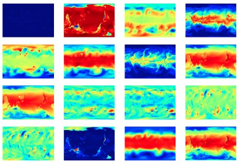

The data is available as one HDF5 file per year. Each HDF5 file contains two datasets:

each row has 5 elements:
classes are types of extreme weather events and go from 0 to 3:
0. Tropical Depression
1. Tropical Cyclone
2. Extratropical Cyclone
3. Atmospheric River
1982: climo_1982.h5 (62 GB)
1984: climo_1984.h5 (62 GB)
1985: climo_1985.h5 (62 GB)
1986: climo_1986.h5 (62 GB)
1987: climo_1987.h5 (62 GB)
1988: climo_1988.h5 (62 GB)
1989: climo_1989.h5 (62 GB)
1990: climo_1990.h5 (62 GB)
1991: climo_1991.h5 (62 GB)
1992: climo_1992.h5 (62 GB)
1993: climo_1993.h5 (62 GB)
1994: climo_1994.h5 (62 GB)
1995: climo_1995.h5 (62 GB)
1996: climo_1996.h5 (62 GB)
1997: climo_1997.h5 (62 GB)
1998: climo_1998.h5 (62 GB)
2000: climo_2000.h5 (62 GB)
2001: climo_2001.h5 (62 GB)
2002: climo_2002.h5 (62 GB)
2003: climo_2003.h5 (62 GB)
2004: climo_2004.h5 (62 GB)
2005: climo_2005.h5 (62 GB)
The variables are the 2nd dimension of the "images" dataset in the HDF5 in the following order:
0. PRECT
1. PS
2. PSL
3. QREFHT
4. T200
5. T500
6. TMQ
7. TREFHT
8. TS
9. U850
10. UBOT
11. V850
12. VBOT
13. Z1000
14. Z200
15. ZBOT
More information as to what each variable means is available here
To use this data in a paper please cite this paper:
ExtremeWeather: A large-scale climate dataset for semi-supervised detection, localization, and understanding of extreme weather events, Racah et al., 2017.